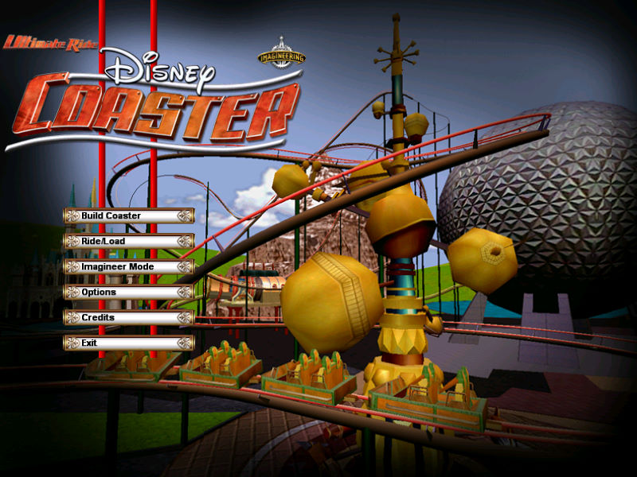
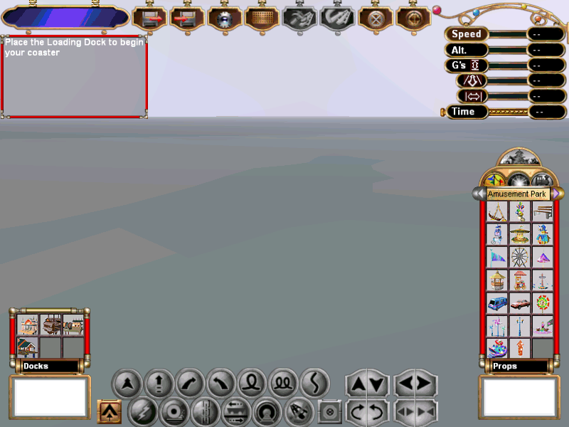

名稱：終極遊樂園：迪士尼雲霄飛車 (Ultimate Ride: Disney's Coaster，英文版)
簡介：Gigawatt 2002年出品的雲霄飛車設計模擬遊戲，由Disney代理發行，為「終極遊樂園」
豪華版的修改版，主題風格換成迪士尼，儘量以娛樂為導向 [待補]。


保護：光碟SecuROM 4.82
備註：虛擬機+XP執行時，若滑鼠無法顯現，可搭配DxWnd執行，或改在Win64實機執行。
檔案：nocd.rar = 免光碟檔（必須選擇Custom裡的最大安裝，不可用內定安裝）
操作：Space = 略過開頭動畫